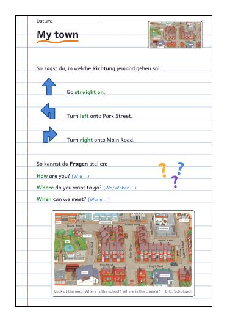
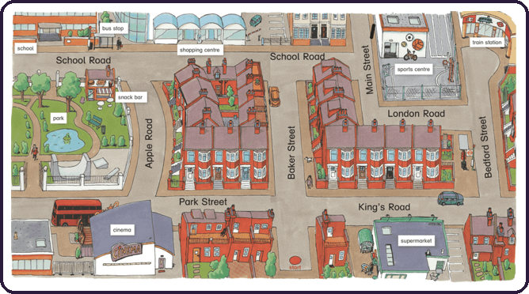
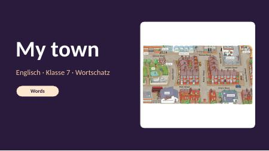
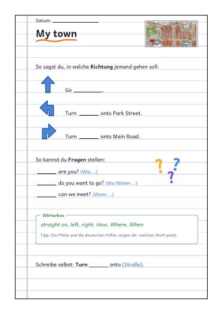
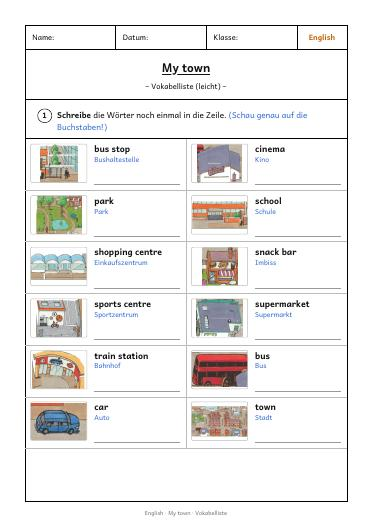
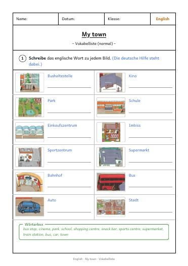
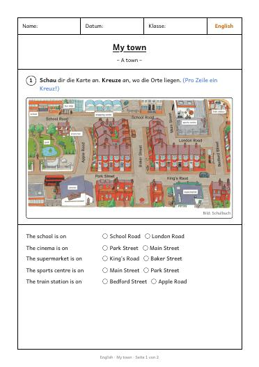

Orte in der Stadt und Wege beschreiben: sprechen, spielen, schreiben. Ablauf, Material, Übungen und Lösungen liegen auf dieser einen Seite.

Von oben nach unten durchgehen. Für 45 Minuten reichen die Phasen mit "Kern". Bei jeder Phase steht, was du brauchst.
Partnergespräch zu den Fotos und zur Karte: "I can see a bike." Dazu die Autos zählen.
Zwölf Bildfolien. Vorsprechen, nachsprechen, einzeln sprechen.
Go straight on, Turn left, Turn right. Erst mit dem Körper, dann nachsprechen.
Drei Runden: Ein Bild fehlt, die Kinder sagen das Wort.
Wort buchstabieren, Rätsel raten.
Richtungen und Fragewörter abschreiben. Als Vorlage zum Abschreiben oder als Blatt mit Lücken.
QR-Code scannen, Aufgaben nacheinander machen.
"Where's the school?" und "Excuse me, please." zu zweit sprechen, danach das Arbeitsblatt.
Wörter aufschreiben, dann Reflecting mit Daumen.
Die PowerPoint zum Durchklicken und alle Blätter zum Ausdrucken. Mit "Ansehen" öffnet sich das PDF im Browser, mit "PDF laden" speicherst du es.

26 Folien: Warm-up, 12 Wörter mit Bildern aus dem Buch, Richtungen, What's missing, Spell, Listen and guess, Wege erfragen, Hefteintrag, Reflecting. Notizen stehen in jeder Folie.
PowerPoint laden




Fünf Übungen, alle zum Tippen. Die Kinder können nichts falsch machen, sie probieren einfach noch einmal. Der Ton kommt vom Gerät, bitte die Lautstärke prüfen.
Wortschatz, Lösungen und Hinweise. Der Wortschatz kommt von Buchseite 1 (important words), die Bilder stammen aus der Stadtkarte auf Seite 12 und 13.
| Material | Lösung |
|---|---|
| What's missing? Runde 1, 2, 3 | park, car, train station |
| Listen and guess (Folie 22) | bus |
| Arbeitsblatt Aufgabe 1 | school: School Road. cinema: Park Street. supermarket: King's Road. sports centre: Main Street. train station: Bedford Street. |
| Arbeitsblatt Aufgabe 2 (Pfeile verbinden) | Pfeil nach links: Turn left. Pfeil nach oben: Go straight on. Pfeil nach rechts: Turn right. |
| Arbeitsblatt Aufgabe 3 | Go straight on. Turn left onto Park Street. Turn right onto Main Road. |
| Arbeitsblatt Aufgabe 4 | Individuell. Beispiel: Go straight on. Turn left onto Park Street. Then there's the cinema. |
| Hefteintrag mit Lücken | straight on, left, right. Fragewörter: How, Where, When. |
| English | Deutsch |
|---|---|
| bus stop · cinema · park · school | Bushaltestelle · Kino · Park · Schule |
| shopping centre · snack bar · sports centre | Einkaufszentrum · Imbiss · Sportzentrum |
| supermarket · train station · bus · car · town | Supermarkt · Bahnhof · Bus · Auto · Stadt |
| Go straight on. Turn left. Turn right. | Geh geradeaus. Biege links ab. Biege rechts ab. |